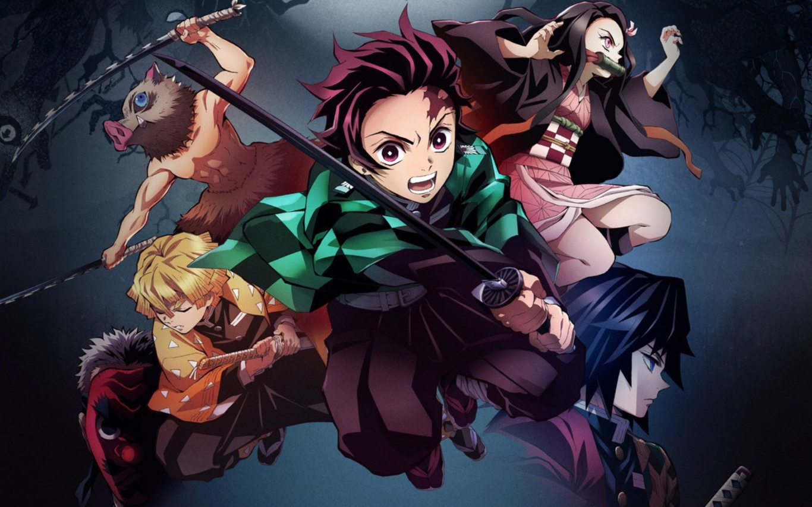

Season 1 follows Tanjiro Kamado's journey to become a Demon Slayer after his family is massacred by demons. He seeks revenge and a cure for his demon sister, Nezuko.
The second season of the popular anime show begins with Tanjiro, Nezuko, and Inosuke investigating the Entertainment District. However, their mission takes a drastic turn when Tengen Uzui, the Sound Pillar, kidnaps three maidens who can help him find his missing wife.

Tanjiro journeys to a village of swordsmiths and has to explain how his sword was so badly damaged to Hotaru Haganezuka, the smith who made it. While Tanjiro waits for his sword to be repaired, enemies close in.